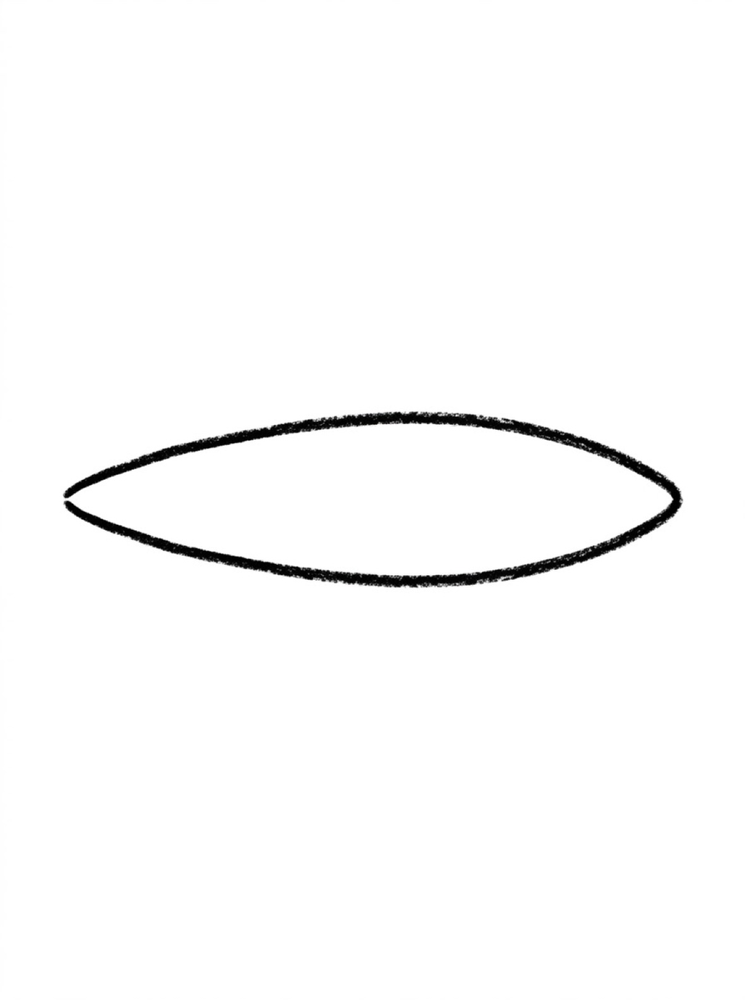
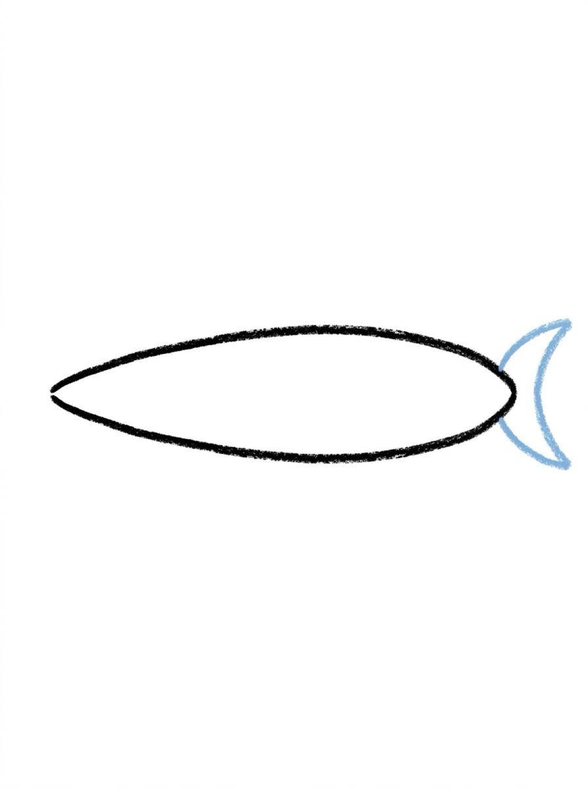
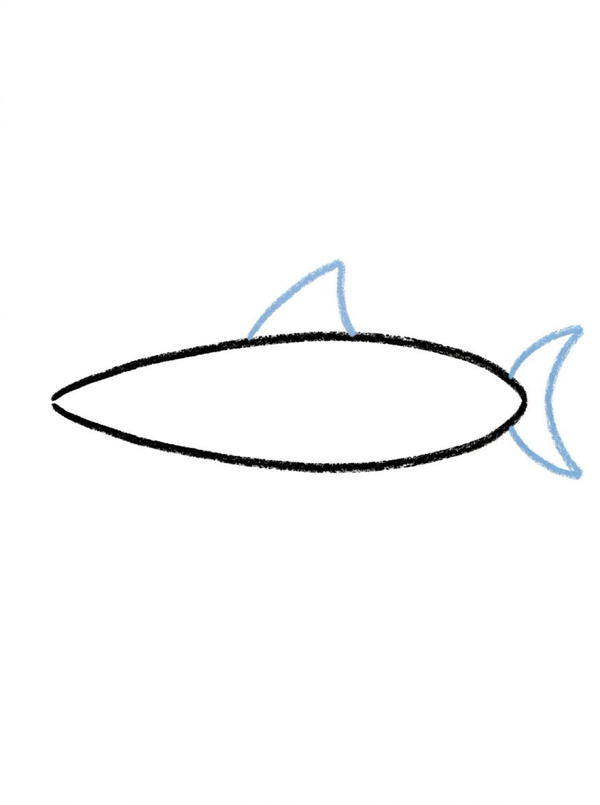
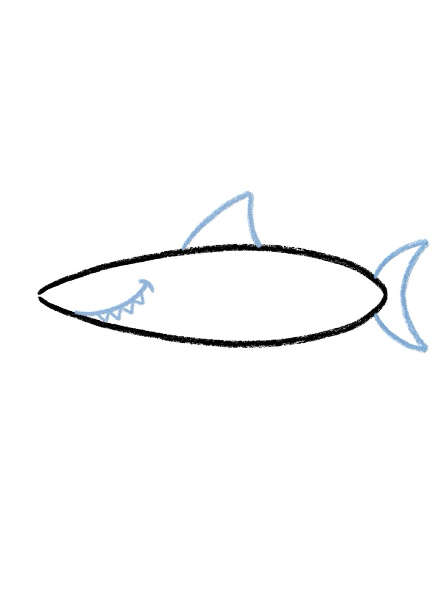
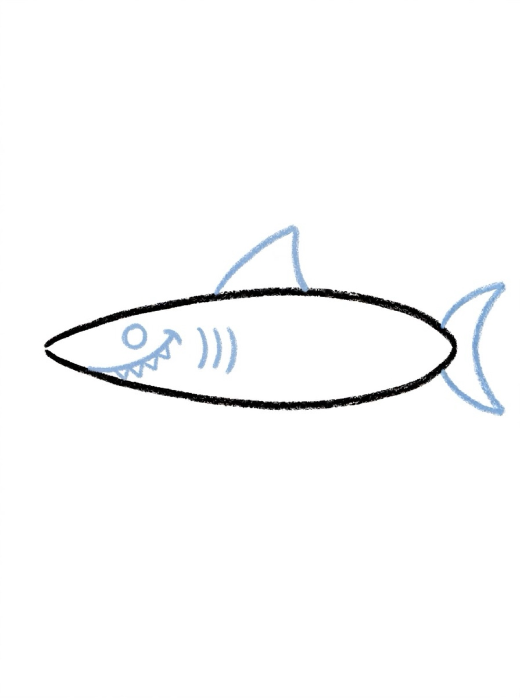
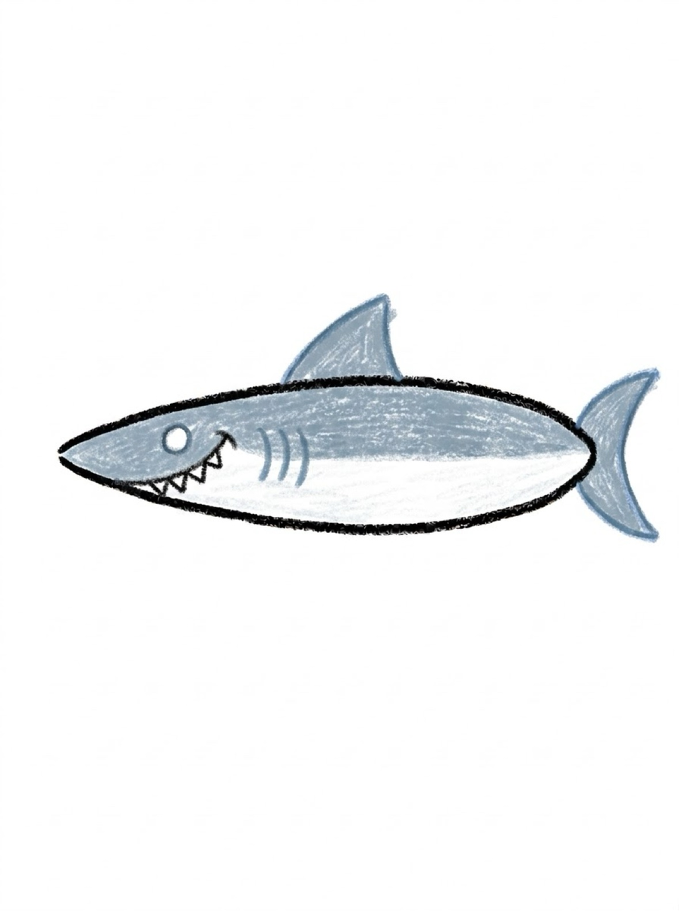

Shark Drawing for Kids How to Draw a Shark in 6 Easy Steps
Quick Answer
This free step-by-step tutorial shows kids how to draw a shark in six easy steps: a long oval body, a tail fin, a dorsal fin, a toothy mouth, an eye with gills, and color. Download the printable PDF, grab crayons, and follow along together. Made for ages 5 and up — no signup needed, just print and draw.
At a Glance
- Subject: How to draw a shark
- Ages: 5+
- Steps: 6 steps
- Time: ~15 min
- Difficulty: Easy
- Supplies: Paper, crayons
Sharks have a reputation, but on paper they're just a torpedo with triangles. The fins are the whole trick — three triangles turn a plain oval into something that looks fast and a little bit thrilling.
✏️ How to Draw a Shark: Step by Step
One step per box — draw each new part in a different color so kids can see exactly what changed.
Step 1: Step 1: The Body

Draw a long sideways oval, pointier at one end — like a torpedo. This is the shark's body.
Step 2: Step 2: The Tail Fin

Draw a sideways V or crescent shape at the back end for the tail fin.
Step 3: Step 3: The Dorsal Fin

Draw a triangle on top of the body for the famous dorsal fin.
Step 4: Step 4: The Toothy Mouth

Draw a curved smile line near the front and add little triangle teeth along it.
Step 5: Step 5: Eye and Gills

Add a round eye above the mouth and three curved gill lines on the side.
Step 6: Step 6: Color It In

Color the top blue-gray and the belly white — real sharks are two-toned!
📊 Shark Drawing by Age
Every age can join in — just adjust the job.
| Age | What they can do | Tip |
|---|---|---|
| 3–4 | Trace the oval body and color it in | Draw the teeth for them — tiny triangles need a steady hand |
| 4–5 | Draw body, tail, and dorsal fin with help | Call the dorsal fin the 'shark hat' — kids remember it |
| 6+ | Draw the whole shark solo | Challenge: draw the shark chasing three little fish |
🖨️ Download Your Free Shark Drawing Printable
The printable lays out all 6 steps one per box, big enough for little hands — kids draw right alongside each step.
⬇️ Open Free Printable 🖨️ Print🎁 Free printable for ages 3+
🦈 Deep Sea Scene
Draw your shark in the middle of a big blue ocean — wavy water lines, a sandy bottom, seaweed, and a school of tiny fish. The shark looks ten times cooler with a world around it. Bonus: the two-tone coloring (dark top, white belly) is real shark camouflage — fun fact for curious kids.
🦈 Drawing Sharks
If you're looking for drawing sharks, this page is the place to start. Sharks are one of the most popular things kids want to draw — big teeth, tall fins, and a shape that's instantly recognizable. The trick to drawing sharks is starting with a long, slightly curved body shape, then adding the triangle fin on top, the tail at the back, and the toothy mouth last.
Here's the pattern for drawing sharks in 6 steps: long curved body, triangle dorsal fin, pointed tail, side fins, big eye, and a wide mouth full of triangle teeth. The same steps work for a great white, a hammerhead, or a tiger shark — just change the head shape and the markings.
For kids who love drawing sharks, the toothy grin is the best part. Let them make the teeth as big and pointy as they want — that's what makes a shark drawing look fierce. And remember: a shark with a smile is still a shark. There's no wrong way to draw one.
What You'll Need to Draw a Shark
Blue or gray for the body, white for the belly — the two-tone look is what makes a shark read as a shark. Black for the outlines and the eye. The triangle teeth need careful placement along the jaw line, so a crayon that isn't too blunt helps. Light blue paper makes a perfect ocean background.
What They're Learning
Sharks teach triangles in a fun context — the dorsal fin, the tail, and every single tooth. The curved body (a long arc, not a circle or oval) is a new line type that builds confidence with sweeping motions. Placing the eye, gills, and fins in the right spots is also good practice in picturing where parts go before drawing them.
Make It Yours
Add an open mouth full of triangle teeth for a fierce shark, or keep the mouth closed for a friendly one. Draw fish swimming away, seaweed on the ocean floor, or a treasure chest nearby. A hammerhead shark (wide flat head) is a fun variation once they've mastered the basic shape. Remoras stuck to the belly are a silly detail kids love.
🛒 Our Favorite Drawing Supplies
These are the supplies we reach for in our own home — washable (because kids), quality paper, and enough colors to avoid fights.
As an Amazon Associate, MomYouNeedThis earns from qualifying purchases — at no extra cost to you.
❓ Shark Drawing FAQs
What is the easiest way for a kid to draw a shark?
Draw a long torpedo-shaped oval for the body. Add a V-shaped tail fin, a triangle dorsal fin on top, a smiling mouth with triangle teeth, a round eye, and gill lines. Three triangles turn an oval into a shark.
What age can kids start learning to draw a shark?
Most kids can manage the oval body and triangle fins around age 5 with help, and the full shark solo by 6 or 7. The teeth are the fiddliest part for little hands.
What supplies do we need to draw a shark?
Paper and crayons or markers — blue-gray and white are the classic shark colors. The free printable PDF lays out all six steps one per box so kids can draw right alongside each step.
Is the shark drawing printable really free?
Yes — every printable on MomYouNeedThis is 100% free to download and print. No signup, no payment, just tap the download button.
Where can I find drawing sharks for kids?
Right here! This page teaches drawing sharks in 6 easy steps: long curved body, triangle dorsal fin, pointed tail, side fins, big eye, and a wide toothy mouth. Follow the steps in order for a finished shark drawing. The free printable PDF lays out all six steps one per box.
How do I print the shark drawing tutorial?
Open the PDF and print at 100% scale (not 'fit to page') so the drawing boxes stay big enough for little hands. The printable is designed to stay large — never shrunk to force a fit.
📚 Keep Exploring
More free drawing tutorials and coloring pages made for little hands and busy parents.
✏️ All 22 Drawing Tutorials